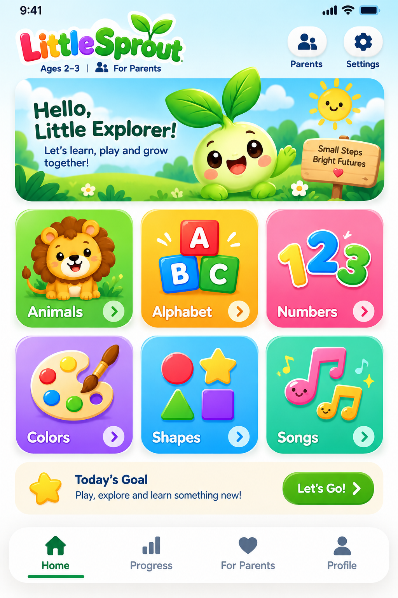
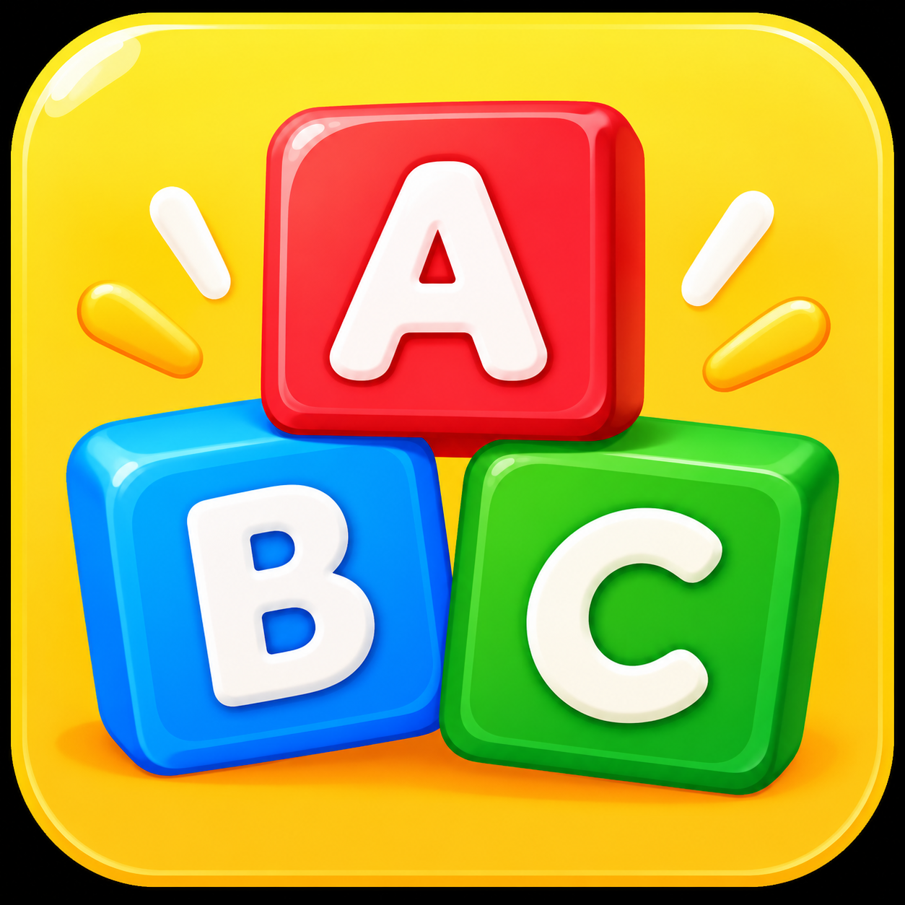
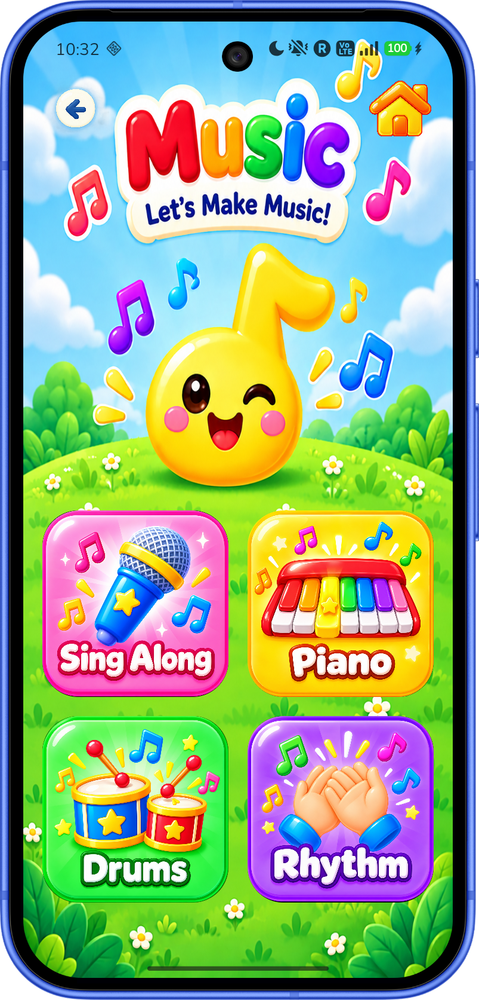
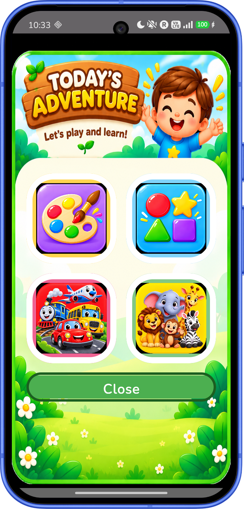

Colorful discovery
Explore familiar pictures, colors, shapes, letters, and numbers in a bright, child-friendly world.
Little Sprout brings colorful learning adventures to little explorers through letters, numbers, shapes, music, animals, and more.
Available for Android and iOS · Built with Compose Multiplatform

Made for little explorers ✨Made to explore
Little Sprout pairs playful visuals with touch-friendly activities and built-in audio for early learners.
Explore familiar pictures, colors, shapes, letters, and numbers in a bright, child-friendly world.
Learning items include audio, and the app has dedicated music activities with sing-along, piano, drums, and rhythm choices.
Play counts and completed activities are recorded so progress can be viewed from the parent area.
Learning areas
These are the learning areas available in Little Sprout.

Alphabet
Inside the app
Children can choose from the dashboard’s nine learning categories and view individual items within each area.
Item audio can be played during activities. Parent settings include sound, music, autoplay, and quiet-mode controls.
The parent area includes progress views for explored activities, songs played, and category progress, plus a reset option.
Today’s Adventure
Little Sprout’s Today’s Adventure presents four learning areas to explore. As an activity is started, it is marked as complete in the adventure.

A closer look
Real screens from the app. Select any screen to view it larger.
App preview
This video is included with the Little Sprout project.
For parents
Little Sprout is designed for children ages 2–3. The project includes a dedicated parent area for settings, progress, privacy and safety, and more.
Adjust sound, music, and autoplay preferences to suit your child. View learning progress and reset activity history right from the app.
Learn about parent features